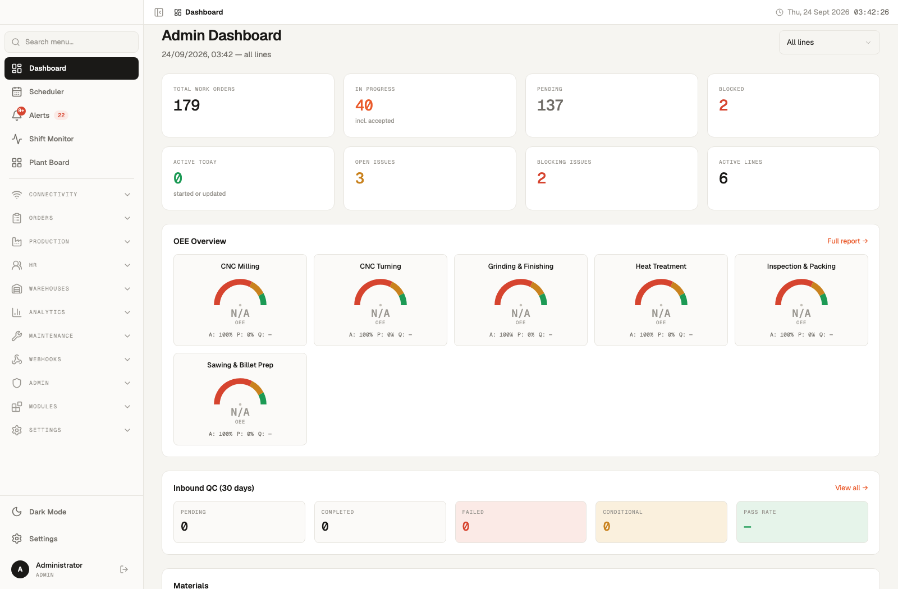
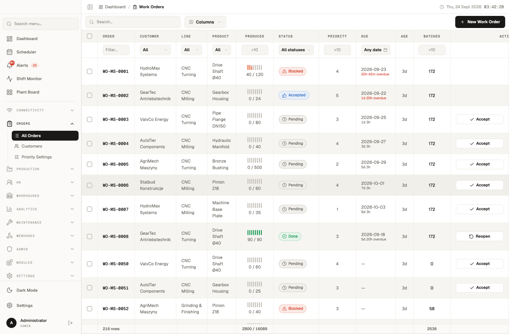
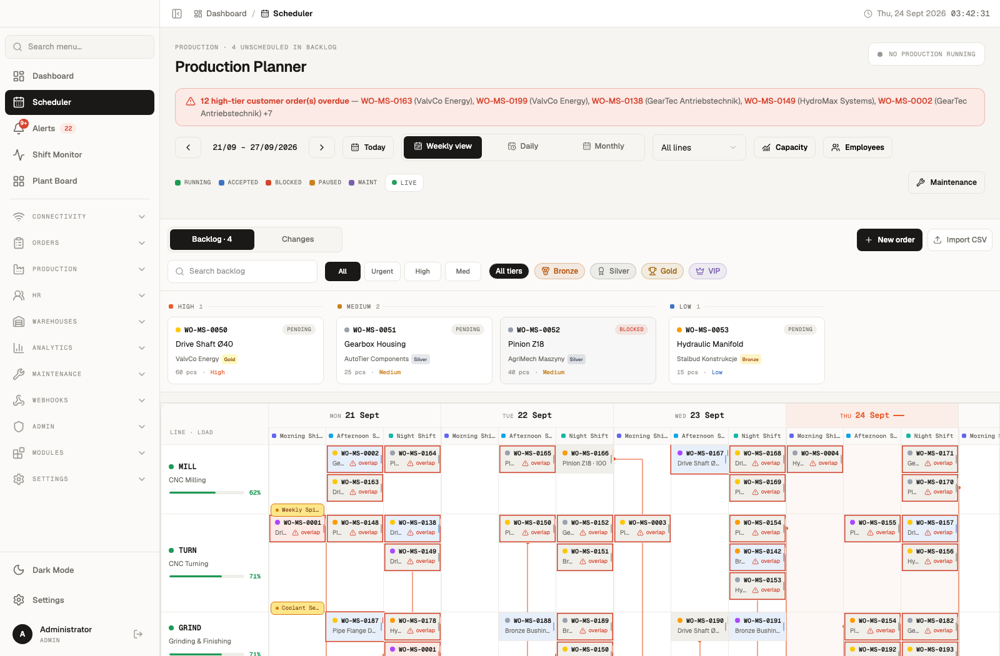
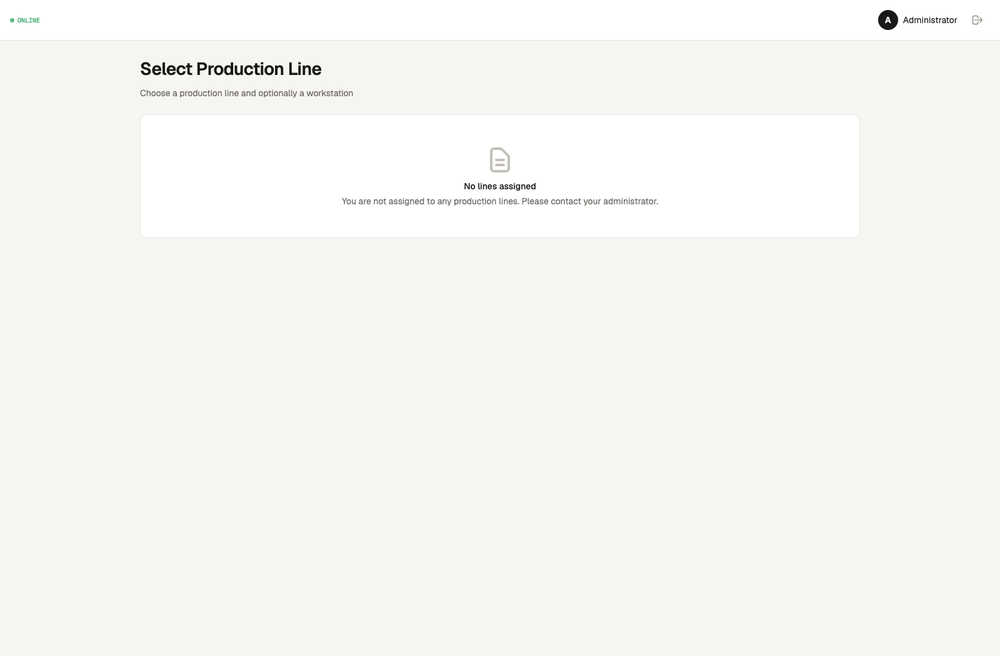
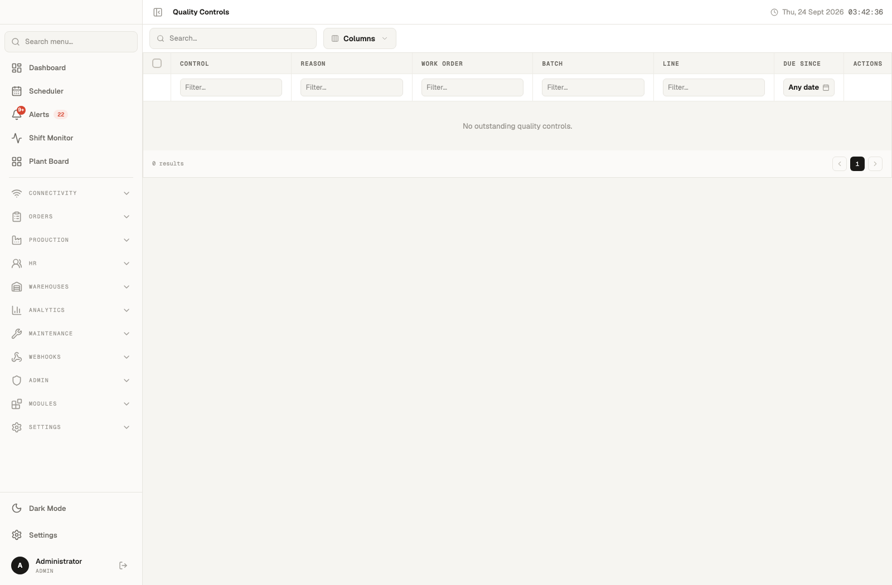
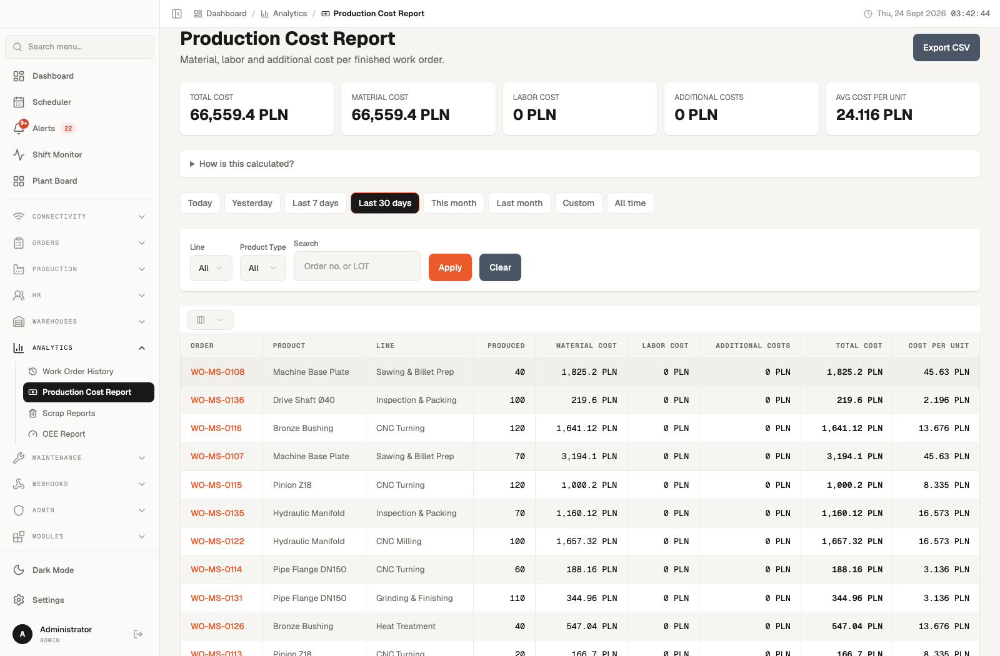

Factories still coordinate across disconnected ERPs, local MES installs, Excel sheets, printed travelers, and radio calls. The data to run operations exists — but no system owns the whole picture.
Status lives in three systems and six heads. Planners spend half their day chasing updates on Zalo, Viber, and WhatsApp.
Downtime reasons are logged on paper, keyed into Excel next week, blamed in meetings next month. Root cause is a feeling, not a fact.
Actual hours and materials are collected after settlement. By the time we see margin erosion, the quarter is gone.
Certificates sit in filing cabinets. Audit prep takes weeks. Customer rejects a shipment and no one can produce the inspection record.
Multi-level approvals happen by signed paper. Lost documents stall releases. Delegation during leave becomes a crisis.
Calibration dates, maintenance history, and failure patterns live in disconnected spreadsheets. Predictive maintenance is a slide, not a practice.
AI Twin is an operations platform that sits above your existing systems — not instead of them. It pulls signals from ERP, MES, SCADA, QMS, and the floor itself, and renders a single live model of your plant that every role can trust.
IoT, PLCs, cameras, drones, mobile terminals — every signal, one event stream.
Work orders, assets, routings, people, materials — unified in a work graph with AI reasoning on top.
Dispatch to the floor, trigger approvals, release certificates, auto-reschedule disruptions.
A live digital twin of operations — queryable, simulatable, and auditable in real time.
AI Twin integrates by APIs and events, never by shared databases. Your SAP, Oracle ERP, and existing MES stay. We orchestrate the work, mirror the state, and give every system clean contracts to talk through.
Masters, orders, inventory, GL postings
People, roles, cost rates
Lots, picks, deliveries
Service requests, SLAs
LSX lifecycle · multi-level approvals · dispatch · routing
Event store · asset graph · AI reasoning · simulation
Shop-floor execution · QC · maintenance · traceability
Scheduler · predictive maintenance · anomaly detection
Runtime, cycles, downtime
Temperature, vibration, flow
Falcon vision integration
Dispatch, actuals, checklists
Every signal — from the customer order in SAP to the final delivery note — moves through a single structured flow. Each stage emits events the twin consumes to update its operating picture in real time.
Customer or planner creates a service request in CRM, SAP, or AI Twin portal. Technical files, deadlines, cost expectations attached.
Capability check against capacity graph. Multi-level approval chain. Work order (LSX) released with cost ceiling.
Routing, BOM, materials, people, equipment, planned cost — pulled from ERP masters and twin inventory.
Operators receive work on tablets. Actuals captured. PLC/IoT confirms machine time. Falcon vision confirms PPE.
Inspection plans trigger at the right moment. Non-conformance routed. Bottlenecks alert planners instantly.
Checklists, digital certificates, customer sign-off. Settlement line pushed to SAP. Delivery note generated.
Every event feeds the twin. Leaders query, simulate, and act — on live operational state, not yesterday's report.
Each stage is auditable, each actor is attributable, each transition emits an event. No more "the paper is lost," "the Excel wasn't updated," or "the ERP doesn't know yet."
The executive dashboard rolls up every work order, line, shift, and alert into one live operating picture. Drill into any card to reach the underlying event trail — no exports, no stale PDFs.


Work orders flow through planned → released → executing → QC → accepted → settled, with every actor, event, and change captured. No more "I thought it was approved."
Gantt view across lines, shifts, people, and equipment. When a machine goes down or an urgent order lands, AI Twin proposes the reschedule — operator approves, change ships.

Operators get the right job, the right drawing, the right checklist — on a tablet or phone. Actuals captured as work happens, not reconstructed at end of shift.



Inspection plans trigger automatically at the right stage. Cost actuals accrue as hours and materials are consumed — not reconstructed at month-end. Margin erosion visible while there's still time to fix it.
We don't do multi-year transformation projects. One line, one plant, one measured baseline — then expand. Here is what the first 12 weeks look like, and the signed deliverables at each gate.
Process mapping, system inventory, integration points with SAP/ERP/MES, success metrics agreed in writing.
Routings, work order templates, approval chains, user roles, bilingual terminology, master data mapping.
SAP / Oracle ERP adapter, HR / payroll feeds, warehouse / WMS integration, PLC & IoT connectivity.
One line, one shift. Operators trained. Daily stand-ups with the floor team. Baseline KPIs captured.
Full plant rollout. Handover docs, runbooks, success metrics review. Phase 2 roadmap signed.
As-is process maps, integration contracts, success metrics baseline, project charter.
Live tenant with routings, workflows, approvals, roles, and bilingual UI deployed in your environment.
SAP/ERP, HR, WMS, PLC connectors tested with your data. Event audit log live. Reconciliation runbook delivered.
Production rollout, trained operators and planners, support rota, success metrics report, Phase 2 plan.
AI Twin is one of three production platforms we ship — alongside Falcon (vision) and AI Beaver (automation). Our team has deployed real systems in real factories, with real downtime, real certificates, and real customers waiting at the gate.
Engineers who have stood on real floors, in real PPE, with real operators — not just conference rooms.
Falcon vision, AI Beaver automation, AI Twin operations — one stack, one vendor, three capabilities.
Vietnam-headquartered. Bilingual by default. ASEAN delivery team. Cost structure that mid-market can afford.
Frappe + OpenMES-grade core. Your data is yours, your extensions are yours — no lock-in.
We're onboarding manufacturing partners for the next deployment cohort. One line, one plant, a signed baseline, and a clear go/no-go gate at week 12. No multi-year commitments.